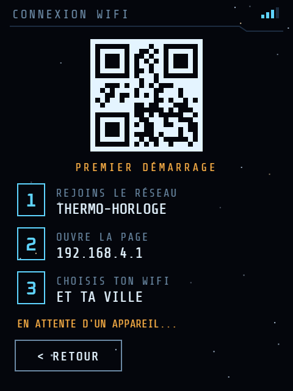
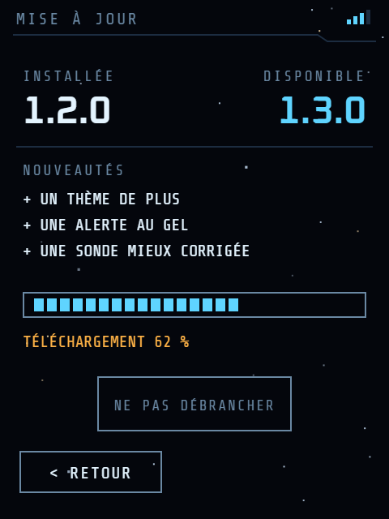

Guide
Fabriquer la sienne
Compter une heure la première fois, dont la moitié à attendre les téléchargements. Rien à souder : une carte, un câble, un ordinateur sous Windows, macOS ou Linux.
Étape 1
Le matériel
- Carte Waveshare ESP32-C6-Touch-LCD-2.8 (environ 35 €). Vérifier « ESP32-C6 » et « 2.8 » dans le nom : d'autres cartes proches n'ont pas le même brochage.
- Câble USB-C de données. Beaucoup de câbles ne font que charger : si l'ordinateur ne voit pas la carte, changer de câble en premier.
- Chargeur USB 5 V pour l'usage au quotidien. Un vieux chargeur de téléphone suffit.
- Pour l'accrocher : adhésif repositionnable, petit pied de téléphone, ou cadre photo dont on découpe le fond. Laisser de l'air derrière la carte : la sonde est sur la carte et le moindre confinement la réchauffe.
Étape 2
Les outils
Télécharger le projet depuis GitHub (bouton Code > Download ZIP, ou git clone). Ensuite, deux chemins au choix.
En ligne de commande, avec arduino-cli
Installer arduino-cli, puis, depuis le dossier du projet, créer
tools/arduino-cli.yaml:board_manager: additional_urls: - https://espressif.github.io/arduino-esp32/package_esp32_index.json directories: data: ./tools/arduino15 downloads: ./tools/arduino15/staging user: ./tools/sketchbookPuis installer le support ESP32 et la bibliothèque graphique (environ 500 Mo) :
arduino-cli --config-file tools/arduino-cli.yaml core update-index arduino-cli --config-file tools/arduino-cli.yaml core install esp32:esp32@3.3.12 arduino-cli --config-file tools/arduino-cli.yaml lib install LovyanGFX@1.3.0
Le script
build.shdu projet attend arduino-cli danstools/arduino-cli/. Sous macOS ou Linux, adapter la variableCLIen tête du script.Ou avec l'IDE Arduino
Dans Préférences, ajouter l'adresse
https://espressif.github.io/arduino-esp32/package_esp32_index.json. Installer esp32 par Espressif, version 3.3.12, puis la bibliothèque LovyanGFX. Ouvrirfirmware/thermo_horloge/thermo_horloge.inoet régler le menu Outils :Carte ESP32C6 Dev Module Flash Size 16MB (128Mb) Flash Mode QIO Partition Scheme 16M Flash (3MB APP/9.9MB FATFS) USB CDC On Boot Enabled
Étape 3
Envoyer le firmware sur la carte
Brancher la carte, puis :
./build.sh auto
Le script trouve la carte, compile (deux à trois minutes la première fois) et l'envoie. Avec l'IDE Arduino : choisir le port de la carte et cliquer sur Téléverser.
Si l'envoi échoue : débrancher, maintenir le bouton BOOT de la carte, rebrancher, relâcher, recommencer.
Pour lire ce que raconte la carte (capteurs trouvés, mesures, erreurs) : ./build.sh monitor, ou le moniteur série de l'IDE à 115200 bauds.
Étape 4
Premier démarrage
L'écran affiche Bienvenue. Deux façons de lui donner le WiFi :
- Sans rien taper : toucher Bouton WPS sur l'écran (ou appuyer sur BOOT), puis le bouton WPS de la box dans les deux minutes.
- Avec le téléphone : scanner le QR code, ou rejoindre le WiFi Thermo-Horloge. La page s'ouvre ; sinon, taper
http://192.168.4.1dans le navigateur (bienhttp, pashttps). Choisir le réseau, coller le mot de passe, indiquer la ville et la pièce.
L'horloge redémarre, prend l'heure et la météo par internet. La page de réglages est ensuite sur http://thermo-horloge.local, ou à l'adresse affichée dans Réglages > Système.
Aucun téléphone ne laisse une application lire ses mots de passe WiFi enregistrés. Le WPS ou le copier-coller évitent de le retaper.


Étape 5
Régler
Étalonner la sonde
La carte chauffe un peu sa propre sonde. Laisser l'horloge allumée trente minutes à côté d'un thermomètre fiable, puis reporter l'écart dans la page web, rubrique Étalonnage. Par défaut, 2,1 °C sont retranchés.
Ajouter l'agenda
Google Agenda : Paramètres de l'agenda > Adresse secrète au format iCal. iCloud : partager l'agenda en public et copier le lien. Coller le lien dans la page web. Les rendez-vous répétés (chaque jour, chaque semaine, chaque mois, anniversaires) sont pris en compte.
Ajouter ses lignes de transport
Paris : créer un compte gratuit sur PRIM, demander une clé pour l'API « Prochains passages », puis indiquer pour chaque ligne l'identifiant de l'arrêt (forme
STIF:StopPoint:Q:…:). Lyon : créer un compte sur data.grandlyon.com et demander l'accès aux données TCL temps réel.Écrire des rappels
Jusqu'à huit, avec une heure, un texte et l'option « chaque jour ». L'horloge bipe et affiche le message.
Si le toucher tombe à côté
Page web, rubrique Étalonnage : inverser X et Y, ou activer un miroir. Le moniteur série affiche les coordonnées de chaque toucher pour vérifier.
Étape 6
Mettre à jour sans câble
Compiler avec ./build.sh, puis ouvrir la page web, Mettre à jour le firmware, et choisir build/thermo_horloge.ino.bin. Les réglages sont conservés.
Aller plus loin
Personnaliser
| Pour | Où |
|---|---|
| Changer les couleurs d'un thème | page web, ou PALS dans ui.cpp |
| Créer un thème | une ligne dans PALS et KITS (ui.cpp), un accueil dans homes.cpp, son nom dans config.cpp |
| Changer ou ajouter une police | tools-src/fontgen.html, rendu dans Chrome, puis node tools-src/fonts2c.js |
| Remplacer les images de loutres | déposer des PNG dans tools-src/img, puis node tools-src/img2c.js |
| Ajouter un écran | ScreenId dans config.h, une fonction scr… dans ui.cpp |
| Changer la sonde ou la carte | board.h et board.cpp : brochage et pilotes |
La maquette interactive de tous les écrans se trouve dans tools-src/site : elle sert à dessiner un écran avant de le coder, et à produire les images de ce site.
Dépannage
Si quelque chose cloche
| Ce qu'on voit | Ce qu'on fait |
|---|---|
| L'ordinateur ne voit pas la carte | changer de câble USB-C (câble de données) |
| L'envoi échoue | maintenir BOOT en branchant la carte, puis renvoyer |
| Écran noir | moniteur série : « Expandeur CH32 absent » indique un souci sur le bus I2C (mauvaise carte ?) |
| Couleurs inversées | dans board.h, passer cfg.invert à false |
| Toucher décalé | page web, rubrique Étalonnage |
| Pas de météo | vérifier la ville dans la page web, et la connexion WiFi (barres en haut à droite) |
| Température trop haute | étalonner la sonde ; éviter de coller la carte au mur ou dans un boîtier fermé |
| Changer de WiFi | Réglages > Système > Oublier le WiFi (toucher deux fois), puis refaire l'étape 4 |